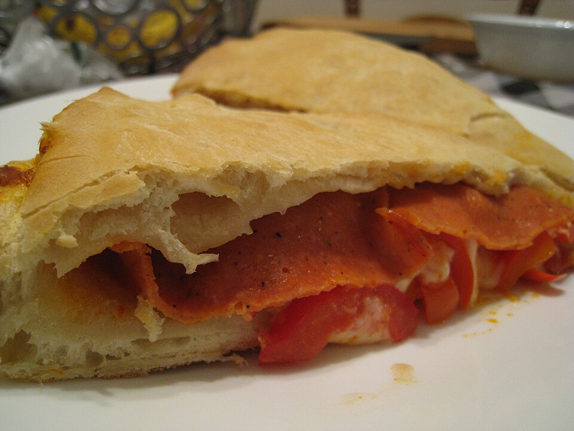

Tortas salgadas
Torta-pizza

Ingredientes
- 3 xícaras (chá) de farinha de trigo
- 125 ml de água
- Sal a gosto
- 150 ml de azeite
- 300 g de cream cheese
- 200 g de tomate pelado escorrido
- 100 g de azeitonas pretas sem caroço
- Sal grosso e orégano a gosto
Modo de preparo
- Pré-aqueça a 200 °C. Misture farinha, água, sal e metade do azeite; divida e abra em duas partes.
- Forre assadeira untada com uma parte; espalhe cream cheese, tomate e azeitonas; regue o restante do azeite e polvilhe orégano. Cubra, feche laterais, polvilhe sal grosso e asse ~50 minutos.
Observação
Cream cheese pode ser trocado por fatias de queijo branco.